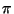

There are a couple of procedures for testing equality in Scheme.
> (= 2 (* 1 2)) #t > (= 2 (* 2 2)) #f
Floating point numbers should be tested for equality by determining an accuracy and by checking whether the two numbers are close enough to each other. For example, let's say that we want to define  like this:
> (define pi (acos -1))
Now, let's see what happens when we try to use = to compare the value a evaluates to (as printed on the screen) and the same value written by ourselves:
> pi 3.1415926535898 > (= 3.1415926535898 pi) #f
Pretty spooky! A better way to test for equality would be to determine an accuracy of, for example, 0.001 and then to define a procedure good-enough? to check whether the two numbers are equal enough:
(define acc 0.001)
(define good-enough?
(lambda (x y)
(< (abs (- x y)) acc)))
(define feq
(lambda (x y)
(good-enough? x y)))
> (feq pi 3.1415926535898)
#t
The eq? procedure is quite similar to eqv? (see below), but is a little bit more strict. It has the following syntax:
(eq? obj1 obj2)
The procedure eq? can be used for testing sameness of symbols, which are identical if they are spelled exactly the same way9.1:
> (eq? 'foo 'foo) #t > (eq? 'foo 'fooo) #f > (define foo 'foo) > (eq? foo 'foo) #t
In general, eq? returns #t if its arguments are identical in every possible way, otherwise it returns #f. For example, if cons is called twice with the same arguments, it still creates two distinct pairs and therefore eq? would evaluate to #f:
> (eq? (cons 'a 'b) (cons 'a 'b)) #f > (define a (cons 'a 'b)) > (define b (cons 'a 'b)) > (define c a) > (eq? a b) #f > (eq? a c) #t
Even if a and b have the same contents, they still refer to different pairs and are therefore considered to be non-equal. c on the other hand will refer to the same pair as a, so a and c can be considered equal in every respect.
The behaviour of eq? on numbers and characters is implementation dependent and it may also behave differently from eqv? on empty strings and vectors. However, it is usually more efficient to use eq? than eqv?, so unless the features of eqv? are needed, eq? should be used.
The eqv? procedure defines an equivalence between objects and should return #t if the objects compared can be regarded as the same object. eqv? has the following syntax:
(eqv? obj1 obj2)
eqv? returns #t if obj1 and obj2 are both true or both false, if both are symbols and spelled the same way, if both are numbers and numerically equal, if both are characters and are the same character according to char=?, if both are the empty list, if they are pairs, lists or vectors that denote the same locations in the store or if they are procedures whose location tags are equal. Practically, it does not differ that much from eq?, but in cases where the behaviour of eq? is not specified, eqv? should be used.
> (eqv? (* 2 2) (sqrt 16)) #t > (eqv? (cons 'a 'b) (cons 'a 'b)) #f > (eqv? 'foo 'foo) #t > (eqv? "" (substring "foobar" 0 0)) #f
The equal? procedure compares the contents of pairs, vectors and strings and applies eqv? on other objects. The syntax of equal? is the following:
(equal? obj1 obj2)
Hence, equal? can be considered to be a general procedure for testing sameness. If you don't know what type of arguments you will be testing for equality, you should use equal?. Note though, that equal? might not return what you would expect when dealing with inexact numbers. You should therefore not rely on equal? being the universal procedure for comparing just about anything. Remember that equal? uses eqv? on objects that are not pairs, vectors and strings! For example:
> (equal? 3 (/ 6 2)) #t > (equal? 3 (/ 6 2.0)) #f
The procedure equal? tests the sameness of its arguments by comparing the contents, for example:
> (equal? (cons 'a 'b) (cons 'a 'b)) #t > (equal? 'foo 'foo) #t > (equal? "" (substring "foobar" 0 0)) #t
Note that equal? may fail if applied to circular data structures.